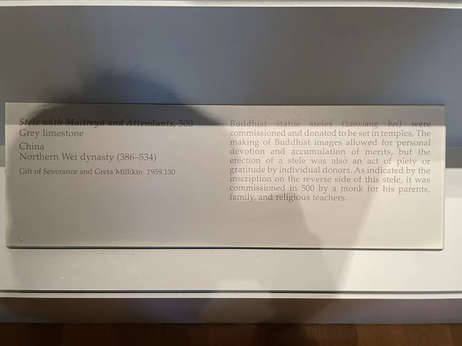

站立的弥勒
主尊直立，右手抬起，左手收持衣褶，密集的U形衣纹沿身体向下展开。两旁胁侍与主尊共用背屏，上部背光已经残断。背面另有图像和文字；正背照片可以并看，先辨大轮廓，再看小人物怎样进入主尊周围。
家人与师长
馆方根据题记说明，一位僧人为父母、家人与宗教师长发愿造像。供养者的僧人身份并未取消与家庭的联系；亲人和传授佛法的人，共同成为功德所指向的对象。 [1]
弥勒的未来佛身份，使这件作品能够和成都释法海母子的发愿相互参看：一件将亲缘与师承并置，一件在母子的共同营造中记住亡父。 [1] [2]
IMAGES AND VOWS / 500
这位僧人的发愿对象包括父母、家人和宗教师长。造像让亲缘与师承出现在同一份愿望里。
灰色石灰岩｜94.6 × 54.6厘米

主尊直立，右手抬起，左手收持衣褶，密集的U形衣纹沿身体向下展开。两旁胁侍与主尊共用背屏，上部背光已经残断。背面另有图像和文字；正背照片可以并看，先辨大轮廓，再看小人物怎样进入主尊周围。
馆方根据题记说明，一位僧人为父母、家人与宗教师长发愿造像。供养者的僧人身份并未取消与家庭的联系；亲人和传授佛法的人，共同成为功德所指向的对象。 [1]
弥勒的未来佛身份，使这件作品能够和成都释法海母子的发愿相互参看：一件将亲缘与师承并置，一件在母子的共同营造中记住亡父。 [1] [2]
1959年由Severance与Greta Millikin赠予克利夫兰艺术博物馆。更早来源未在本条馆录中明确。 [1]
作品与现场展签摄影：Merton。铭文按各件所列已刊录文或提供的转录本呈现；白话解读为本站意译。公开资料中的缺字与异文保留在对应作品页。